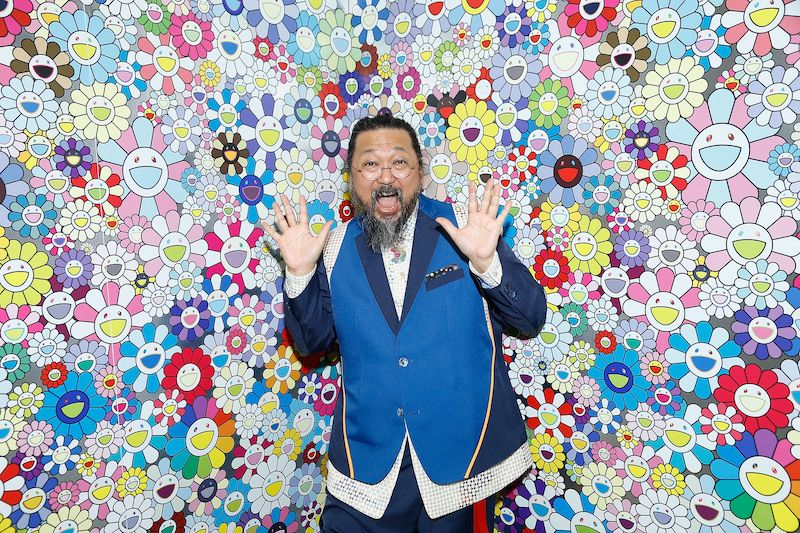

Takashi Murakami is known around the art world as a highly unique, inimitable artist. His brightly-colored, ergonomic, multi-faceted art helps it stand out and catch the eye of many. Takashi was born on February 1, 1962 in Itabashi City, Tokyo, Japan. His father was a taxi driver, and his mother was a homemaker who studied needlepoint (a form of embroidery in which yarn is stitched through a stiff open weave canvas) and designed textiles. He was greatly interested by her involvement in art and the (then new) drawing style of anime and manga that was created because of a Japanese cultural reformation post-World War 2 (As a matter of fact, his style changed greatly over the years because of the nuclear bombs dropped on Japan). At age 18, Takashi decided on enrolling in the nihonga (traditional Japanese art) department of Tokyo National University of Fine Arts and Music. From there, his art journey had started in the creation of art.
